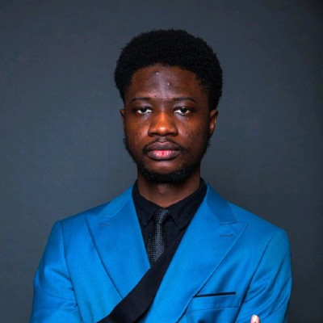

David Ademuyiwa
I am a PhD researcher in the Music Interaction and Computational Arts (MICA) Lab at The Bridge Studios, UWE Bristol. I am supervised by Professor Tom Mitchell (MiMU Gloves).
My research focuses on AI for wearable music interfaces: sensing gesture, touch, and material interaction, then mapping learned movement representations to musical control for expressive performance.
Previously, I completed an MSc in Artificial Intelligence with Distinction and a First Class BSc in Computer Science. My previous work also spans document-level machine translation for African languages, low-resource Nigerian language sentiment analysis, and adversarial testing for driverless-vehicle vision systems.
Contact
Reach me on LinkedIn or follow my work on Google Scholar.